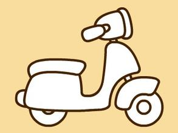

<!DOCTYPE html>
<html lang="en">
<head>
    <meta charset="UTF-8">
    <title>frame</title>
</head>
<body>
<!--<div class="box">-->
<!---->
<!--<p class="txt"></p>-->
<!--</div>-->
<!--<div class="box">-->
<!---->
<!--<p class="txt"></p>-->
<!--</div>-->

<ul class="catList"></ul>
<section class="clickArea">
    
    <p class="catCount"></p>
    <p class="catName"></p>
</section>
</body>
</html>
<script>
    //    (function (){
    //        const box = document.querySelectorAll('.box');
    //        box.forEach((item) => {
    //            const img = item.querySelectorAll('.img');
    //            const txt = item.querySelectorAll('.txt');
    //            let count = 0;
    //            img[0].addEventListener('click', () => {
    //                count++;
    //                txt[0].innerText = count;
    //            })
    //        })
    //    })();


    const model = (function () {
        //相关数据
        const _model = {
            catLists: [
                {
                    src: '1.jpg',
                    name: 'cat1',
                    count: 0
                },
                {
                    src: '2.jpg',
                    name: 'cat2',
                    count: 0
                }
            ],
            targetCatIndex: 0, //目前可被点击的是哪知喵在catLists中的索引
        };

        //获取getCatLists
        function getCatLists() {
            return _model.catLists;
        }

        //获取目标对象
        function getTargetCatObj() {
            return _model.catLists[_model.targetCatIndex];
        }

        //修改targetCatIndex
        function setTargetCatIndex(name) {
            _model.catLists.some((catObj, index) => {
                if (catObj.name === name) {
                    _model.targetCatIndex = index;
                    return true
                }
            })
        }

        //目标对象点击数+1
        function addTargetCatCount() {
            const catObj = getTargetCatObj();
            catObj.count += 1;
        }

        return {
            getCatLists,
            getTargetCatObj,
            setTargetCatIndex,
            addTargetCatCount
        }
    })();

    const view = (function () {

        //获取各个需要操作的DOM节点
        const img = document.querySelector('.catImage');
        const name = document.querySelector('.catName');
        const count = document.querySelector('.catCount');

        //初始化页面
        function init(catLists, targetObj) {
            const list = document.querySelector('.catList');
            const fragment = document.createDocumentFragment();
            
            for (let i = 0, len = catLists.length; i < len; i++) {//为ul添加对应的li
                const li = document.createElement('li');
                const name = catLists[i].name;
                li.innerHTML = name;
                li.addEventListener('click', function () {
                    controller.changeTargetCat(name);//之后会有controller相关的代码，其实就是换一只可点击的喵
                });
                fragment.appendChild(li);
            }
            list.appendChild(fragment);
            img.addEventListener('click', function () {
                controller.addCount(name);//之后会有controller相关的代码，其实就是计数+1
            });
            render(targetObj);
        }

        //重新渲染页面
        function render(targetObj) {
            img.src = targetObj.src;
            name.innerHTML = targetObj.name;
            count.innerHTML = targetObj.count;
        }

        return {
            init,
            render
        }
    })();

    const controller = {
        addCount(name) {//通过model的接口增加目标对象的计数
            model.addTargetCatCount(name);
            controller.renderView();
        },
        changeTargetCat(name) {//通过model的接口修改目标索引
            model.setTargetCatIndex(name);
            controller.renderView();
        },
        init() {//通过model的接口获取相关数据
            const { getCatLists, getTargetCatObj } = model;//传参并命令view层初始化
            view.init(getCatLists(), getTargetCatObj());
        },
        renderView() {
            view.render(model.getTargetCatObj());//传参并命令view层重新渲染
        }
    };
    
</script>

<!--

model
    在自执行函数中，设计了一个对象命名为_model，通过闭包存储它。
    自执行函数返回一个对象，其中包含四个函数。四个函数执行后，
    可以返回或修改_model中对应的数据。通过注释看其实还是挺清楚的。
    
view
    view层，负责页面渲染。这个可能复杂一点，
    但不想把它弄得太繁琐，不如就两个方法吧。
    就一个初始化的init()和负责更新视图的render()方法就好啦。
    view层的代码其实也很简单的，和model层的套路差不多，
    通过自执行函数结合闭包存储之后要操作的节点，对外暴露由两个方法组成的对象，
    分别是init与render。init用于初始化话页面，render用于重新渲染页面。里面调用了controller，

controller
    主要是用于逻辑相关的处理，算是整个设计里面的大脑。
    不过由于这项目比较简单，所以代码反而是最简单
    controller的设计其实是比较简陋的，只是一个包含了四个方法的对象。
    其中addCount对应点击加一的操作，changeTargetCat对应换猫的操作。
    上述两个方法其实是改变了数据的，而只要数据发生了变化，
    一律调用renderView重新渲染，之后调用一下controller.init();

-->